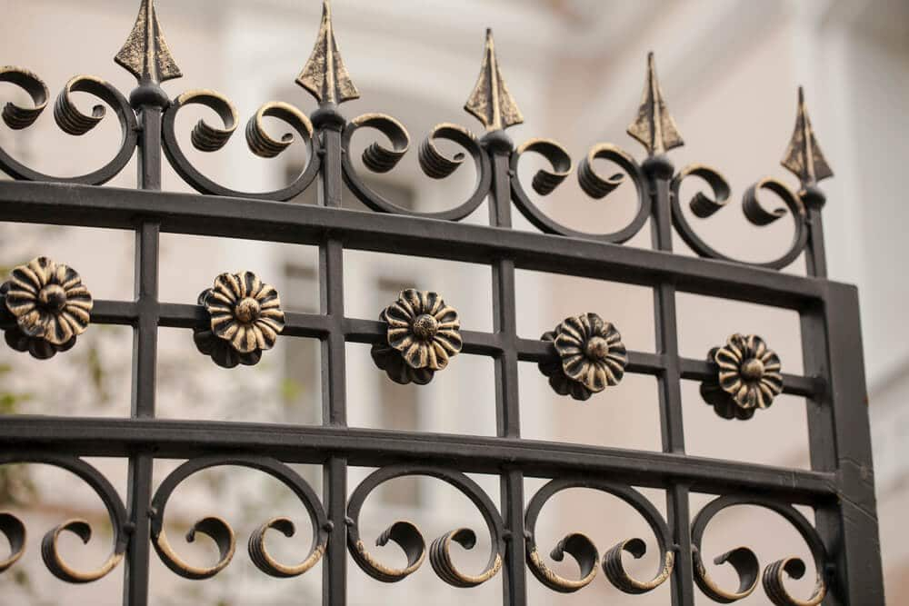
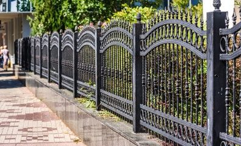

In This Guide
- Vinyl wins on low upkeep and solid privacy, while metal wins on strength, security, and a more decorative, open look.
- Aluminum does not rust, but steel and wrought iron need protective coatings and occasional touch-ups in our humid air.
- A solid vinyl privacy fence catches wind, and open metal designs let storm gusts pass through.
- Choose by what you need the fence to do first: screen the yard, secure the property, or dress up the front of the house.
Vinyl and metal are two of the most popular choices for a home fence, and they could hardly be more different. One is a smooth, solid plastic that asks for almost nothing. The other is a strong, open framework that can be as plain or as ornate as you like. Here is how they compare on the things that matter most.
At Big Easy Fence, homeowners often come in undecided between the two. The rest of this guide goes through weather, upkeep, looks, and protection in turn. If you would like to see the wider range first, start with our fence types.
Durability in Louisiana Weather
Heat, humidity, heavy rain, and storm winds all test a fence. Each material handles them differently, and "metal" covers more than one material.
Vinyl
Vinyl is a PVC product that does not rust, rot, or warp from moisture. That suits our climate well. Its weak points are hard impacts and extreme heat, which can crack or distort panels, and it can pick up mildew in damp, shaded spots.

Aluminum
Aluminum does not rust, which makes it a strong match for humid and salt-touched air. It is lighter than steel, so it is a good fit for ornamental styles. It can dent under a hard blow, though it will not corrode the way iron does.
Steel and Wrought Iron
Steel and wrought iron are the strongest of the group. They will rust when the protective coating wears through, and moisture speeds that up. A good factory finish and a quick touch-up when you spot chipped paint keep the metal in shape for a long time.
Maintenance Compared
This is where the two materials feel the most different day to day.
Vinyl needs an occasional wash. A hose and a cloth clear most dirt, and there is nothing to paint. Metal needs a closer look. Aluminum takes little more than an occasional cleaning. Steel and wrought iron ask you to check for chipped paint and early rust, touch those spots up, and keep hinges on any gates moving smoothly.

Cost of upkeep depends on the metal and how well the finish holds up. Talk to your contractor about what a specific product will need before you commit. Our metal fence page covers the metal options in more detail.
Looks and Style
Vinyl
Vinyl gives a clean, uniform look. It comes in privacy panels, pickets, lattice tops, and more, mostly in white and neutral colors. It suits traditional and many modern homes, though it can look plain next to very ornate architecture.
Metal
Metal can be simple and modern or highly decorative, with scrollwork, finials, and curved tops. Its slim bars keep the view open, so it frames a property instead of hiding it. It is a natural match for older homes with historic character.
Security and Privacy
Security
Steel and wrought iron are tough to cut, bend, or break through, which is why they are common where security matters. Aluminum is lighter but still a solid barrier. Vinyl can be pushed or cracked with enough force, so it works better as a boundary and privacy screen than as a security feature.
Privacy
Solid vinyl panels block sightlines and take some of the edge off street and yard noise. Metal fences are open by design, so they give little privacy unless you add screening or plant a hedge along them. Some people choose metal for the front and vinyl for the back.
Wind
A tall solid vinyl fence catches strong wind like a sail, so posts and installation need to be done well. Open metal designs let gusts pass through, which is a helpful trait during hurricane season.
Side-by-Side Comparison
| Factor | Vinyl | Metal |
|---|---|---|
| Rust | None | None for aluminum, possible for steel and iron |
| Upkeep | Occasional washing | Cleaning, plus coating touch-ups on steel and iron |
| Privacy | Excellent with solid panels | Low unless screened |
| Security | Moderate | Strong, especially steel and iron |
| Storm Wind | Solid panels catch wind | Open bars let wind through |
| Look | Clean and uniform | Simple to highly decorative |

Which One Should You Choose?
Start with the job. If the fence needs to screen the yard from neighbors and the street, vinyl is the natural pick. If it needs to secure the property, dress up an entrance, or fit an older home, metal usually gets the nod. Price differs a great deal by style and material, so ask for quotes on the specific designs you like instead of assuming one costs less.
Many homeowners end up using both. Whatever you choose, a free estimate from our residential fencing team can help you compare the real options for your property.
Torn Between Vinyl and Metal?
Tell us what the fence has to do and what your yard looks like. We will help you compare the two side by side.